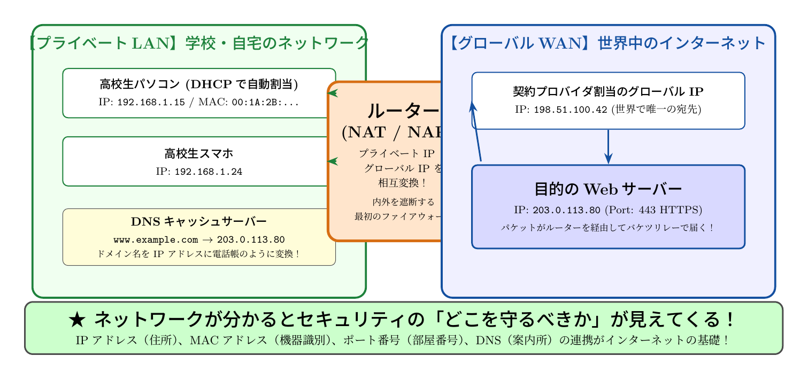

🎨 ストーリーイラスト
AI生成ビジュアル▲ 【挿絵】青葉台高校 情報科学部＆帝都科学大学サイバーディフェンス・ラボでの実践シーン
📖 小説本文
放課後の部室は、西日が差し込んでオレンジ色の光に包まれていた。 窓際では、電子工作部部長の城崎悠真が、山積みになったLANケーブルと数台のWi-Fiルーターを前に、苦労したような顔で作業を続けていた。 「……よし、これでようやく配線の整理が一段落だね」 彼がそう呟いた瞬間、背後から「ねえ、悠真くん。これって結局どうなってるの？」と、葵の弾んだ声が響いた。 橘葵は、ルーターの背面にあるステッカーや、管理画面に表示されている文字列を不思議そうに見つめている。 「あ、ごめん。集中しすぎて気づかなかった」 悠真は手元のケーブルを置き、彼女の方へ向き直った。 「何が、葵？」 「この『IPアドレス』っていうやつ。さっきの画面に並んでたけど、これって全部違う番号なの？ それとも、どこか特定の場所を指してるの？」 葵は首を傾げ、まるで難解な数式を見つめる子供のような表情をした。 「いい質問だね。……簡単に言うと、IPアドレスっていうのはネットワーク上の『住所』のことだよ」 悠真は手近なLANケーブルを手に取り、それを指し示しながら続けた。 「例えば、この部室のWi-Fiに繋いでいる僕のノートPCや、葵のスマホ。それぞれに『プライベートIPアドレス』っていう番号が割り振られているんだ。画面に映っていた『192.168.x.x』っていう数字、見たでしょ？」 「見た。全部同じような始まりの数字だったけど」 「そう。それは『家の中（またはこの部室の中）』だけで通用する内線電話みたいなものなんだ。LANっていうのは、Local Area Networkの略で、限られた範囲のネットワークのこと。この中では、みんな同じ番号のルールを使っていいから、プライベートIPを使うんだよ」 悠真はルーターの前面にあるランプの点滅を指さした。 「でも、問題がある。世界中の家や学校が、全部同じ『192.168...』っていうプライベートな番号を使ったら、インターネットの世界では衝突しちゃうでしょ？」 「あ……そっか。隣の家も同じ番号を使ってたら、迷子になっちゃうね」 「正解。だから、外の世界と繋がるためには、世界でたった一つしかない『グローバルIPアドレス』が必要になるんだ。僕たちのルーターは、このプライベートな内線と、外の世界の広大な網――WAN（Wide Area Network）を繋ぐゲートウェイとしての役割を果たしているんだよ」
葵は少しだけ眉をひそめた。 「じゃあ、私のスマホからYouTubeを見ようとした時、どうやって自分のスマホにデータが届くの？ 世界中に同じプライベートIPを使ってる人がいるなら、ルーターはどうやって見分けるの？」 その疑問に答えるべく、悠真はタブレットを操作し、ビデオ通話のボタンを押した。数秒の待機の後、画面には大学の書斎で作業をしていた芹沢涼香の姿が現れた。 「お疲れ様、悠真くん。葵さん。ネットワークの基礎の話をしてるって聞いたから、ちょっと覗かせてちょうだい」 画面越しの涼香は、穏やかな微笑みを浮かべながら眼鏡の縁を押し上げた。 「あ、芹沢先生。ちょうどいいところに。葵が『ルーターはどうやって宛先を振り分けるのか』って不思議がってたんです」 悠真が説明を促すと、涼香は身を乗り出すようにして画面に近づいた。 「それなら、私の『バケツリレー』の例えを聞いてくれる？ いいかしら、想像してみて。このルーターを『大きなマンションの受付窓口』だと思って」 涼香の声は、まるで物語を語るように滑らかだった。 「外の世界（WAN）からデータが届く時、それはまずこのマンションの共用玄関……つまり、ルーターの『グローバルIPアドレス』に届くわ。でも、そこにはたくさんの部屋があるわよね？ そこで活躍するのがNAT、またはNAPTっていう技術よ」 彼女は手元のホワイトボードに図を描き始めた。 「ルーターは受付係ね。外から来た荷物を受け取った時、その荷物の『ポート番号』というラベルを確認するの。例えば、『80番ポート宛て』ならウェブサイトのデータ、『443番ポート宛て』なら暗号化された通信……という風に、あらかじめ決めたルールに従って、中のどの部屋（デバイス）に届けるべきかを判断するわ」 「ポート番号……？」 葵が聞き返すと、涼香は頷いた。 「そう。IPアドレスが『建物の住所』だとしたら、ポート番号は『部屋の番号』のようなものね。ルーターは、外からのリクエストに対して『この荷物は葵さんのスマホ宛てだから、内側のこのプライベートIPに転送しよう』と翻訳して繋いでいるの。これがNAT（Network Address Translation）という仕組みよ」 「……なるほど。ルーターが、外の世界向けの住所と、中の世界向けの住所を高速で書き換えながら、交通整理をしてくれてるってことね」 葵の目が輝いた。
涼香の説明は止まらなかった。彼女はさらに一歩踏み込んだ。 「でもね、私たちが普段『google.com』とか『yahoo.co.jp』っていうドメイン名を入力して、どうやってあんなに速くサイトに飛べるのか、不思議に思ったことはない？」 葵は「えっ」と声を上げた。 「それこそがDNS、Domain Name Systemの役割よ。人間にとって『172.217.x.x』なんて数字を覚えるのは苦行でしょう？ だから私たちは名前で呼ぶ。でも、機械は数字しか理解できない」 涼香はホワイトボードに「電話帳」という文字を大きく書いた。 「DNSはインターネットの巨大な『電話帳』なのよ。あなたがURLを入れた瞬間、ブラウザはまずDNSサーバーに問い合わせるわ。『google.comの住所を教えて！』ってね。するとDNSサーバーは一瞬でIPアドレスを返してくれる。そのバケツリレーのように、名前から数字へ変換されることで、私たちは迷子にならずに目的のサーバーへ辿り着けるの」 悠真が感心したように頷いた。 「まさに情報の交通整理ですね。DNSがあるからこそ、僕たちは直感的にインターネットを使える。でも、この仕組みを知っていることは、セキュリティを考える上でも極めて重要なんです」 悠真は画面越しに涼香と視線を交わした。 「ルーターがNATで内側を守りつつ、ポート番号で交通整理をする。DNSが名前と住所を繋ぐ。この基本構造を理解していないと、どこでデータが盗聴され、どこで偽の住所に誘導されているのか、防衛のポイントすら見えなくなってしまうから」 「……つまり、この『バケツリレー』の仕組みを知ることが、ネットの世界を守るための第一歩になるってことね」 葵は画面の中の涼香と、目の前の悠真を交互に見て、深く頷いた。
ビデオ通話を終えた後、部室には再び静寂が訪れた。 しかし、先ほどまでの「ただの機械」の山は、葵の目には違った景色として映っていた。 無機質なルーターの筐体、整然と並んだLANケーブル。それらは単なる電子部品ではなく、世界中を繋ぐための緻密なルールに基づいた「道」を作り出している装置なのだ。 「……すごいね。当たり前だと思ってたことが、実はこんなに複雑で美しい仕組みで動いてたなんて」 葵はルーターのランプを見つめながら、感嘆の声を漏らした。 「そうなんだよ。この基礎を知っていることは、将来君がセキュリティに関わる時、大きな武器になる。ネットワークの『地図』を正確に把握している人は、迷路の中で一番強いからね」 悠真は誇らしげに笑い、最後に残っていたケーブルをカチリと接続した。 「次は何を学ぶ？ 次は、この『道』を通り抜けるデータがどうやって暗号化されているか……の話でもする？」 「うん！ それも教えて。この世界の裏側をもっと知りたいな」 葵の瞳には、好奇心の火が灯っていた。 窓の外では、夕闇がゆっくりと世界を覆い始めていた。しかし、部室の中に灯るモニターの光は、次なる知識への扉を照らし出しているようだった。
---
📊 セキュリティ構造図解 (TikZ LuaLaTeX生成)
国家安全基準・工学図解
▲ 【技術構造図】IPAデジタルスキル標準・国際規格に準拠した仕組みのモデル化
💡 高校生のためのセキュリティ深掘りコラム ＆ 大学進路ガイド
💡 1. 家と世界を分ける境界線：LANとWAN
家庭や学校内のパソコン・スマホを結ぶ身近なネットワークがLAN（Local Area Network）、通信事業者のインフラを介して世界中とつながる巨大な広域網がWAN（Wide Area Network / インターネット）です。両者の境界に設置され、データの交通整理を一手に引き受けるのがブロードバンドルーターです。
💡 2. プライベートIPとグローバルIPの変換マジック（NAT/NAPT）
世界中の機器すべてに固有のIPv4アドレスを配るには数が足りません。そのため、家庭内では192.168.x.xなどのプライベートIPアドレスを使い、外のインターネットに出るときにルーターが契約プロバイダから割り当てられた1つのグローバルIPアドレスへと一時的に変換します（NAT/NAPT）。この仕組みがあるおかげで、外の攻撃者から家庭内のPCに直接無断アクセスされるのを防ぐ防壁（最初のファイアウォール）としても機能します。
💡 3. インターネットの巨大な電話帳：DNS（Domain Name System）
人間にとって覚えやすいドメイン名（例: ipa.go.jp）を、コンピュータが通信するためのIPアドレス（例: 192.0.2.1）に瞬時に翻訳してくれる仕組みがDNSです。世界中のDNSサーバーが分散管理され、階層的なバケツリレーで問い合わせを処理しています。偽のDNS応答でフィッシングサイトに誘導する「DNSスプーフィング」への対策として、応答の正当性を暗号署名で検証するDNSSECの導入も進んでいます。
💡 4. 大学で学ぶ「高度コンピュータネットワーク論」
情報系大学では、OSI参照モデル、ルーティングプロトコル（BGP/OSPF）、パケット解析、クラウド仮想ネットワーク（SDN）などを理論と演習の両面から学びます。ネットワークの基礎を深く知る技術者は、大規模インフラを設計・保守・防衛するネットワークセキュリティエンジニアとして極めて重宝されます。